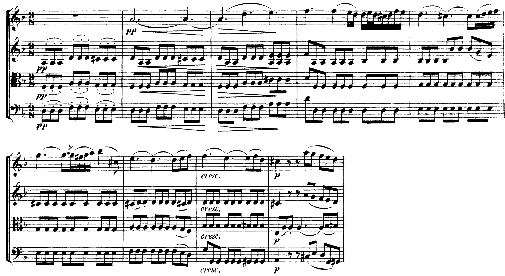

Quattro terze minori uguali, nessuna fondamentale udibile: la settima diminuita appartiene a otto tonalità e conduce a ciascuna di esse. Beethoven la usa per sospendere una frase; l’Ottocento la usa per andare lontano.
Di fatto esso non si trova mai a casa propria, non è mai indipendente ed ha, per così dire, diritto di cittadinanza ovunque, senza essere stabile in nessun luogo: un cosmopolita dunque, o un vagabondo!
A. Schönberg, Manuale di armonia, p. 245
La V3 (14/12) era una prova di sola scrittura nella forma della seconda prova, tipologia B: un basso senza numeri che modula due volte ai toni vicini, da realizzare a quattro parti, e una melodia che modula due volte, da armonizzare a quattro parti; cinquanta punti ciascuno. Sotto il basso andavano scritti i gradi, sotto ogni cambiamento di tono la doppia cifratura dell’accordo comune, e una M dove la cadenza conferma il tono nuovo.
1. Il piano tonale. I due toni raggiunti e il ritorno; per ciascuno l’accordo comune con la doppia cifratura, la sensibile del tono nuovo che sale, la cadenza che lo conferma.
2. La condotta. Quinte e ottave parallele, anche per moto contrario; quinte e ottave nascoste fra le estreme con il soprano di salto; sensibile raddoppiata o non risolta; settima non risolta.
3. La melodia. Le cadenze riconosciute dove la melodia si ferma; le note di passaggio armonizzate una per una, invece che lasciate sopra l’accordo che le contiene.
Rileggi il tuo foglio con la griglia. Correggi a margine ogni errore segnato riscrivendo la battuta intera, e accanto scrivi in una riga la regola violata, con il numero di battuta.
B3Ampliamento dello spazio tonale: modulazioni cromatiche con equivalenti enarmonici, lezione 11, pp. 220–222; simmetria e asimmetria in musica, lezione 12, pp. 224–225 · D. D’Urso, C. Bertolini, Il linguaggio della musica, 5° anno.
Struttura simmetrica. In ciascuno dei suoi quattro stati la settima diminuita è formata da uno stesso intervallo ripetuto tre volte, la terza minore o la seconda eccedente, che le è enarmonica: le quattro disposizioni «sono identiche dal punto di vista del risultato sonoro e non sono distinguibili all’ascolto al di fuori di un contesto musicale; solo l’accordo di risoluzione consente di capire» quale sia la fondamentale (D’Urso, Bertolini, p. 220). Nella divisione simmetrica dell’ottava le quattro terze minori sono l’arpeggio della settima diminuita (p. 224).
Tre trasposizioni. Perché la struttura si ripete ogni tre semitoni, esistono soltanto tre settime diminuite diverse: si–re–fa–la♭, do♯–mi–sol–si♭, re♯–fa♯–la–do. Ciascuna serve quattro toniche maggiori e quattro minori: «un portale in grado di mettere istantaneamente in comunicazione punti del circolo delle quinte tonalmente distanti» (p. 221).
Accordo vagante. Schönberg chiama «vaganti» gli accordi che «non appartengono a nessuna tonalità specifica e possono appartenere a molte», e ne indica la caratteristica nella mancanza della quinta giusta; e conclude che proprio questi risultati logici del sistema dovevano portare «all’eliminazione della tonalità» (Manuale di armonia, pp. 245–246).
Credere che le quattro «letture» diano quattro accordi diversi. Il suono è uno solo: cambia la grafia, e con la grafia cambiano la fondamentale e la risoluzione. Se, riscrivendo l’accordo, cambia anche un solo tasto, si è cambiato accordo, non lettura.

Le prime quattro battute prolungano la tonica. Il violoncello alterna re, fa e mi in crome ribattute, e sopra di esso le armonie sono i, i⁶ e vii°⁶, cioè la tonica e la sua dominante di sensibile; il violino I entra alla b. 2 con il la4 tenuto e sale al re5, al mi5 e al fa5 della b. 4. Alla fine della b. 4 il basso tiene il re mentre le parti superiori passano a re–fa–si♭, un VI⁶₄ di volta sopra il pedale di tonica.
Alla b. 5 il basso sale al mi e la sonorità cambia natura. Sul primo movimento mi–sol–si♭ con il re5 del violino I è la settima semidiminuita del secondo grado in stato fondamentale, iiø⁷; sul secondo il violino I scende al do♯5, e l’unico suono cambiato trasforma l’accordo in do♯–mi–sol–si♭, la settima diminuita di re minore, anch’essa in primo rivolto. La b. 6 la prolunga per tutta la battuta: il violino II e la viola tengono do♯ e sol, il violoncello il mi, e il si♭ torna nel canto alla fine della battuta, dopo la salita sol–fa♯–sol–la. La risoluzione arriva alla b. 7 sul i⁶: il basso sale di semitono dal mi al fa, il do♯ del violino II sale al re, il sol della viola al la. Due battute intere di settima diminuita, prima che la tonica la chiarisca.
Le bb. 8–9 ripetono il procedimento sulla dominante. Il sol del violoncello sostiene sol–si♭–re con il fa5 e poi il mi5 del violino I, cioè iv⁷ e poi di nuovo la settima semidiminuita del secondo grado, ora in primo rivolto (iiø⁶₅: mi–sol–si♭–re con il sol al basso); sull’ultimo movimento della b. 8 il basso sale al sol♯, la viola al si♮, e l’accordo diventa sol♯–si–re–fa, la settima diminuita della dominante, che alla b. 9 si risolve sul la: semicadenza. Le due settime diminuite della frase appartengono a due trasposizioni diverse, do♯–mi–sol–si♭ e sol♯–si–re–fa, e tutte e due derivano da un accordo semidiminuito del secondo grado: la prima per lo spostamento di una sola voce (re→do♯), la seconda per l’innalzamento cromatico del basso e della viola (sol→sol♯, si♭→si♮). La settima diminuita nasce qui come intensificazione cromatica della sottodominante, e la sua funzione la decide il basso che sale di semitono.
Cifrare la b. 5 come «vii°⁷» senza lo stato. Il basso è il mi, non il do♯: l’accordo è un vii°⁶₅, e il primo rivolto spiega la risoluzione sul i⁶ della b. 7 invece che sul i in stato fondamentale. Nella Mazurka di Chopin, alla b. 14 (lezione 1), la stessa sonorità si♯–re♯–fa♯–la sta invece sopra la dominante sol♯: è la nona minore, e la settima diminuita vi compare come parte superiore di un accordo di cinque suoni.
Modulazione enarmonica con la settima diminuita. La settima diminuita del tono di partenza viene reinterpretata come settima diminuita di un altro tono, riscrivendone enarmonicamente una nota, e risolta in quel tono. Il libro di testo ne dà l’esempio del primo movimento della Sonata op. 13 di Beethoven, dove alla b. 138 la settima diminuita di sol minore diventa quella di mi minore per la lettura del mi come re♯ (D’Urso, Bertolini, p. 221). La nuova settima diminuita si scrive di norma nel tono d’arrivo; quando l’autore mantiene la grafia del tono di partenza, la risoluzione appare «inconsueta» sulla carta (p. 221, con l’esempio di un Lied di Schubert).
Il suono delle bb. 3, 5 e 9 è lo stesso, e la funzione la decide soltanto il basso e la condotta dell’accordo seguente. Alla b. 3 il sol♯2 sale al la; alla b. 5 la stessa sonorità, con il fa scritto mi♯, è la settima diminuita di fa♯ minore in terzo rivolto per la lettura della minore, e in stato fondamentale per quella di fa♯: il mi♯2 sale al fa♯2, il re5 scende al do♯5, il si3 al la3. Fra la e fa♯ minore ci sono tre alterazioni di distanza, e il passaggio avviene senza alcuna nota estranea alla sonorità di partenza; il ritorno (b. 9) usa la stessa porta nell’altro senso.
Scrivi soprano, contralto e tenore sopra il basso dato, su due righi. 1. Le quattro grafie della settima diminuita: sol♯–si–re–fa, si–re–fa–la♭, re–fa–la♭–do♭, fa–la♭–do♭–mi𝄫. 2. Ogni battuta pari è la tonica maggiore: la sensibile sale di semitono, la settima e la quinta scendono, la terza va alla tonica. 3. Dalla tonica alla settima diminuita seguente, le voci si muovono di semitono o restano.
Quattro terze minori uguali, tre sole trasposizioni, quattro fondamentali possibili per ciascuna: la funzione la decide la risoluzione. In Beethoven nasce da un accordo semidiminuito per lo spostamento di una voce e sospende la frase; nella modulazione enarmonica apre la porta verso un tono distante tre alterazioni.
Il grado con lo stato (vii°⁶₅, vii°⁷/V), la nota che fa da sensibile e la risoluzione con la battuta; se l’accordo è un perno, la doppia cifratura e la grafia con cui è scritto.
La lezione si chiude con il solfeggio: si cantano le quattro settime diminuite dell’esercizio, in arpeggio, e le loro risoluzioni. La lezione seguente è di scrittura: una melodia che modula lontano.
Compiti per la prossima volta
Realizza a quattro parti il basso dato, otto battute in semibrevi, quattro coppie di accordi. In ogni coppia il primo accordo è la sonorità do♯–mi–sol–si♭, ogni volta nella grafia del tono in cui risolve, con la fondamentale al basso; il secondo è la tonica maggiore, in stato fondamentale: re, fa, la♭, si. Sotto ogni coppia scrivi la grafia usata e la fondamentale.
Se riscrivendo l’accordo cambia un tasto, si è cambiato accordo, non grafia. Le quattro coppie sono indipendenti: fra una coppia e l’altra conta la grafia, non il collegamento delle voci.
Sul quaderno, a matita. La foto del lavoro finito va su Classroom. Nel Workbook: apri l’esercizio 6.16 ↗
Compiti per la prossima volta
n. 361 e n. 362 parlato · n. 363 endecalineo · n. 364 e n. 365 cantato · n. 366 e n. 367 ritmico
Ogni pezzo a tempo, senza fermarti: il parlato a nomi, il cantato prendendo il primo suono dalla tastiera, il ritmico battendo la pulsazione.
Scrivi la melodia sul quaderno, in chiave di violino: otto battute in 3/4, la maggiore. Il primo suono è la. Prima il riferimento, poi tutto due volte, ogni coppia di battute due volte, il collegamento 1–4, 3–6 e 5–8, e tutto per controllare.
Il riferimento: accordo di tonica e primo suono
Il dettato · otto battute
Le sezioni (riferimento, tutto, le coppie, il collegamento) si ascoltano una per una e si ripetono quanto serve; le fasi fanno la procedura della classe, con gli annunci e le pause, da qualunque punto.
Sul quaderno scrivi in testa la sigla C5-D-U06-L4. Si corregge all’inizio della prossima lezione.
Compiti per la prossima volta
Scrivi un contrappunto di seconda specie (due note contro una) sopra il canto fermo, in modo dorico (finale re): undici battute. Comincia su una consonanza perfetta, alla cadenza la sensibile sale alla finale, niente quinte e ottave consecutive.
Sul quaderno, con la sigla C5-CP-U06-L4 in testa; la foto va su Classroom.
Realizza a quattro parti il basso senza numeri: sedici battute in 4/4, fa maggiore. Trova tu l’accordo di ogni nota (la regola dell’ottava è il punto di partenza) e scrivilo sotto; poi il soprano, poi le voci interne. Accordi che puoi usare: tutto quello studiato, e una modulazione a un tono vicino. Il basso modula: trova dove, e in quale tonalità arriva.
Sul quaderno, con la sigla C5-BD-U06-L4 in testa; la foto va su Classroom.
Armonizza a quattro parti il canto dato: sedici battute in 4/4, re maggiore. Prima le cadenze, poi il basso per intero, e solo alla fine contralto e tenore. Accordi che puoi usare: tutto quello studiato, e una modulazione a un tono vicino.
Sul quaderno, con la sigla C5-CD-U06-L4 in testa; la foto va su Classroom.
Scritto: Una settima diminuita, quattro grafie (Workbook, esercizio 6.16), sul quaderno; la foto va su Classroom. Solfeggio dal quaderno di lettura: parlato n. 361, 362; endecalineo n. 363; cantato n. 364, 365; ritmico n. 366, 367 (a tempo, senza fermarsi). Dettato C5-D-U06-L4 dalla pagina della lezione (sezioni da ascoltare, o le fasi della procedura guidata), sul quaderno con la sigla. Contrappunto di seconda specie sul canto fermo (C5-CP-U06-L4). Basso senza numeri da realizzare a quattro parti (C5-BD-U06-L4). Canto dato da armonizzare a quattro parti (C5-CD-U06-L4).
In classe
A nomi, a tempo, con la mano che batte. Chi si ferma riparte dalla battuta dopo.
Apri il n. 356 nel quaderno di lettura ↗ chiave di tenore · 9/8
In classe
A nomi, a tempo, sul doppio rigo: prima si trovano con gli occhi i passaggi da una chiave all’altra.
In classe
Si prende il tono dalla tastiera, si canta insieme; poi a gruppi.
Apri il n. 358 nel quaderno di lettura ↗ chiave di violino · 3/4 · la minore
Apri il n. 359 nel quaderno di lettura ↗ chiave di violino · 4/4 · fa maggiore
In classe
Tutti insieme, battendo la pulsazione. Poi a file, due battute a testa.